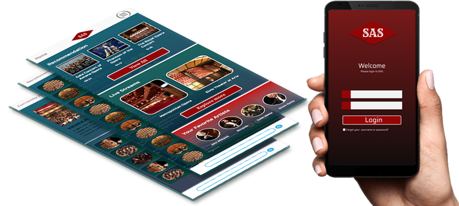
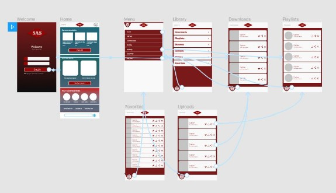
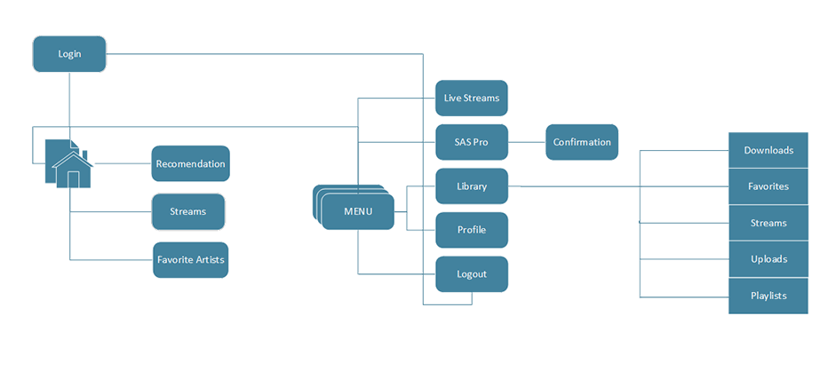

Challenge: Design a video or music streaming app.
Solution: My solution was SAS Music App: a music streaming app. Users are able to share and listen to their favorite music. Also they can create their own library.

Paper and Digital Wireframes
Taking the time to create designs of each screen on paper ensured that the elements that made it to digital wireframes would be well-suited to address user pain points.



Low-FI Prototype
The low-fidelity prototype connected the primary user flow of listening and sharing music, so the prototype could be used in a usability study with users.
User Flow

Final Design after Usability Study


High-FI Prototype
The low-fidelity prototype connected the primary user flow of listening and sharing music, so the prototype could be used in a usability study with users.